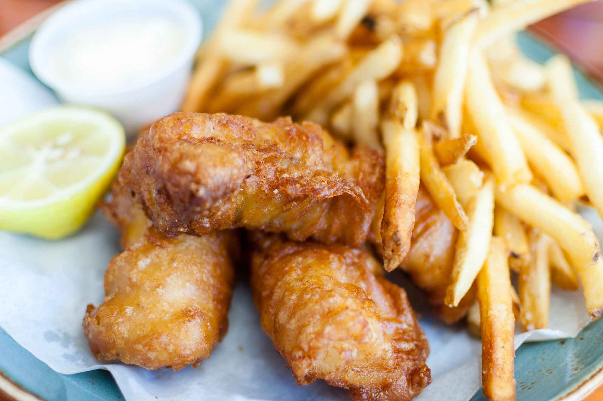
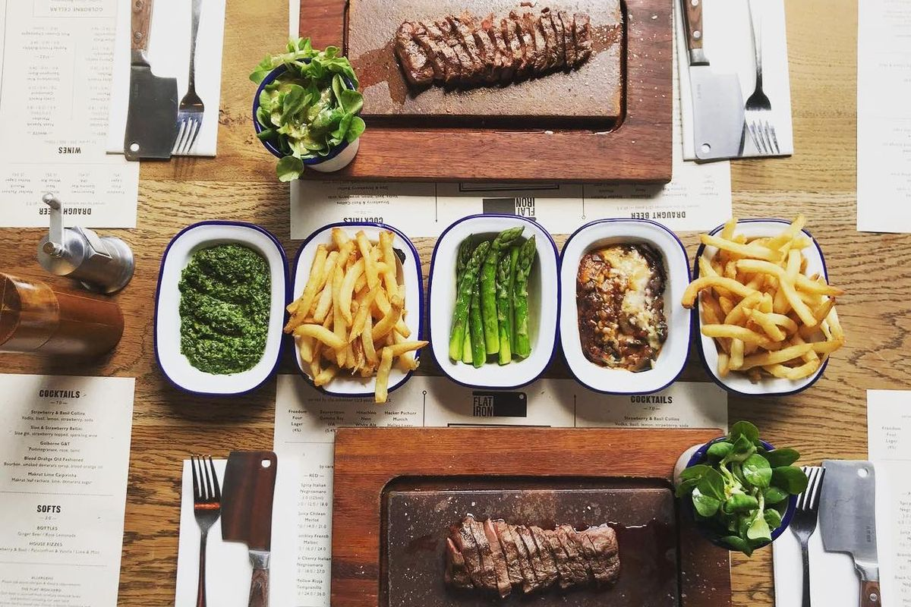
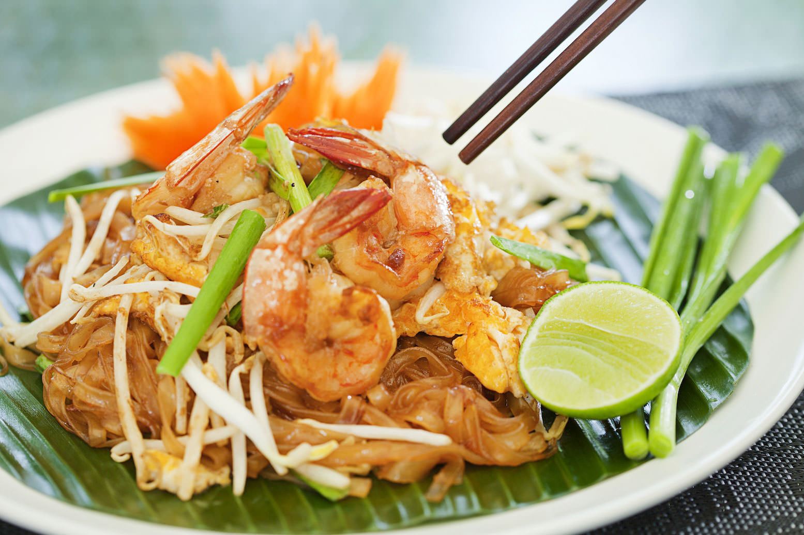
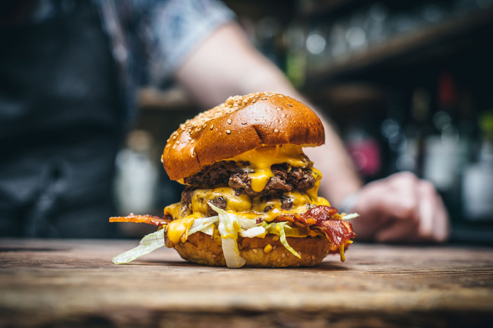
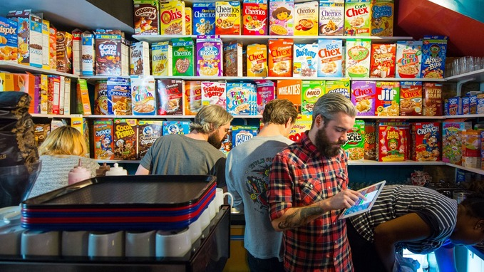
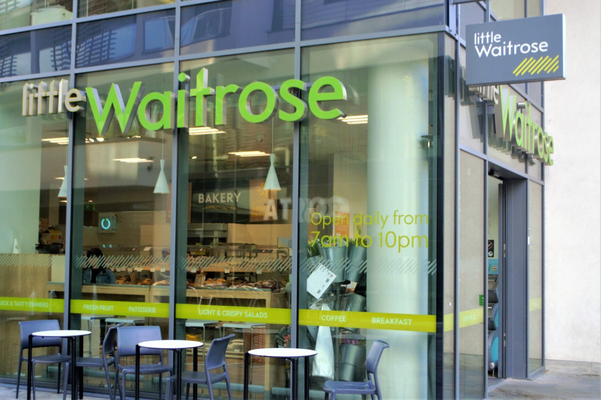
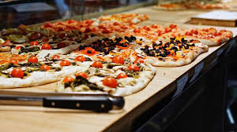

As one of the most culturally vibrant cities in the world, London is home to some of the most diverse and authentic cuisines. Here in London, you will be able to experience some of the greatest food, the United Kingdom has to offer. Explore the various restaurants from classic London Fish and Chips, to unique Asian fusion dishes, to rustic European food.
Restaurants
Olde London Fish & Chips
Looking for a classic? Olde London Fish & Chips is where Fish and Chips ORIGINATED, and I can guarantee that is does not fail to live up to its expectations. Now how’s that for a classic?
Flat Iron
Visit Flat Iron to get the chance to cut your food with your very own flat iron (cleaver). Afterwards, make sure your stomach isn’t full as the restaurant provides customers with a poker chip token for FREE ice cream.
Thai Taste London
Thai food is very prevalent in the city as many Thai residents have established their own authentic businesses. Thai Taste London is only one of many, but it is delicious none the less.
Fun Fact: There are more than 300 languages are spoken in London, and Central Thai is one of them!
Mac & Wild
Ready to chow down on a burger? Stop by Mac & Wild for a scrumptious meal for you and your buds.
Xi'an Impression

Amazing Chinese food is all I can say. This restaurant serves beautifully made Chinese dishes.
Cereal Café
In for an American dish? Head over to the Cereal Café to try as many as 100+ varieties of cereal.
Grocery Stores
You’d be surprised, but you can also grab some delicious meals from the local grocery stores! They have meals hot, fresh, and ready to go! I suggest you try: Marks and Spencer, Little Waitrose & Partners, Sainsbury's.
Buongiorno e Buonasera
Enjoy a swift and totally tasty meal with natural ingredients and unique, friendly Italian feeling! This classic eatery is open from morning to evening, serving coffee and beer, soups, salads, main courses, and of course, pizza! The fantastic thing is: all their dishes are made fresh with all-natural Italian ingredients.